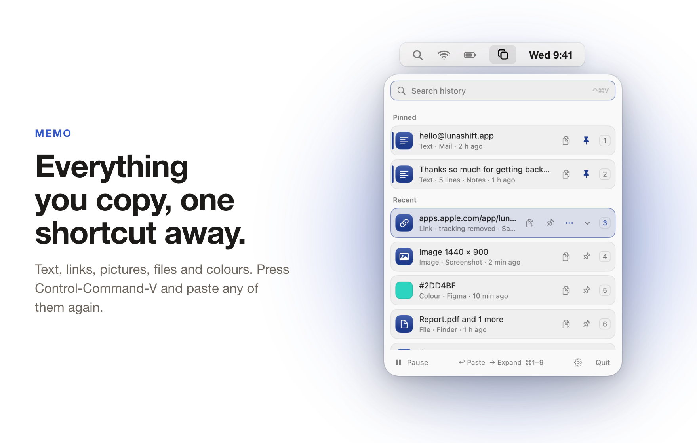
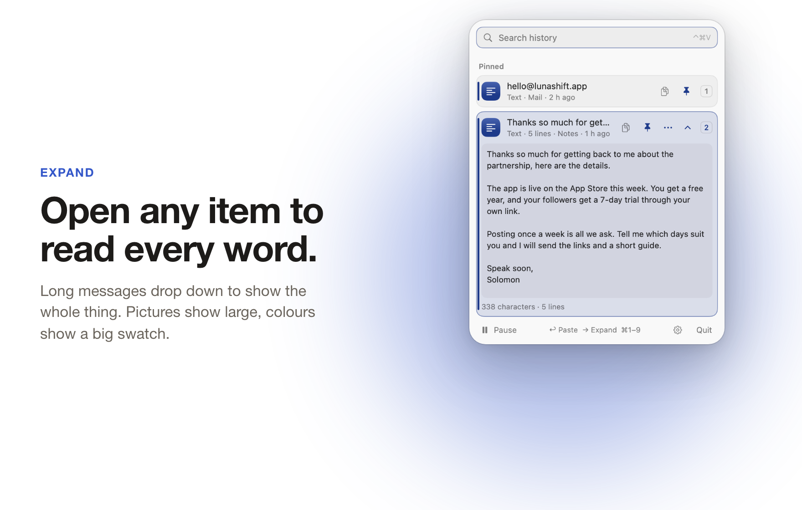
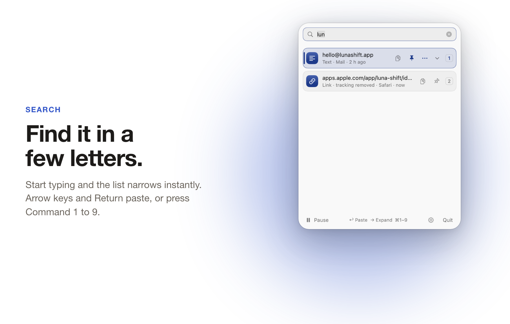
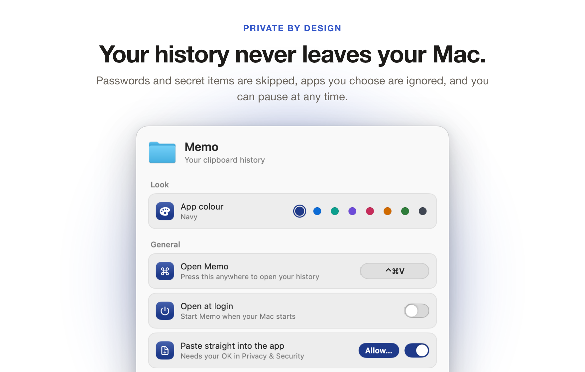
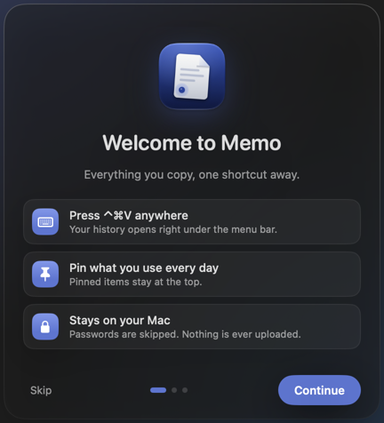
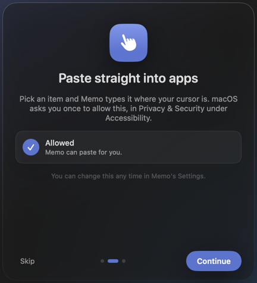
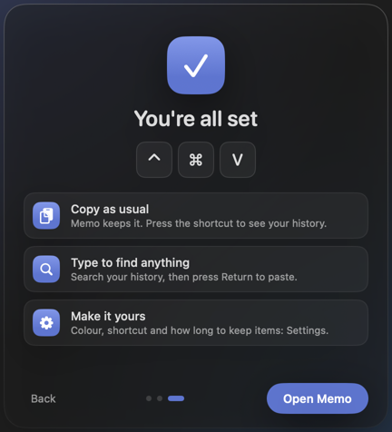

Memo
Everything you copy, one shortcut away
Memo keeps a history of everything you copy: text, links, pictures, files and colours. Press Control, Command and V anywhere, pick an item, and it pastes straight back into the app you are using.
Version 1.1.1. The download buttons give the last published build (1.1). The newest version is published when its builds are ready.
Mac: macOS 14 Sonoma or later, on Apple silicon. Free, open source (MIT licence), no account needed.

What it does
Your clipboard, kept tidy
Memo sits in the menu bar and quietly keeps a list of what you copy. Nothing is lost when you copy something new.
Open any item to read it all
Long text shows in full and you can select part of it. Pictures show large, files are listed, and colours show a big swatch with the code.
Find it in a few letters
Start typing as soon as the panel opens and the list narrows with every letter. Pin the things you paste every day so they stay at the top.
Your history stays on your Mac
No account and no network access. Items from password managers, and items apps mark as hidden, are never saved.
New in V2
Now on Windows too, and easier to share
Memo started on the Mac. V2 brings it to Windows and makes it simple to hand to a friend.
A Windows version
Memo now lives in the Windows tray. Press Ctrl+Shift+V to open your history and pick an item to paste it back.
Share with a friend
On a Mac, one click packs the app up and opens the share sheet, so you can send it to a friend by AirDrop.
Menus stay open
Click another icon in the menu bar and this panel stays open instead of closing on you.
A closer look
Read it, find it, keep it
Screenshots of the panel. Memo follows your light or dark setting.



Keys
Made for the keyboard
You can do almost everything without touching the mouse. You can change the shortcut that opens Memo in Settings.
- Open Memo⌃ ⌘ V
- Move and paste↑ ↓ then Return
- Quick paste⌘ 1 to 9
- Paste as plain text⌥ Return
- Expand or collapse a rowSpace or ←
- Pin or unpin⌘ P
Version 1.1.1
A calm first minute
A short welcome with a frosted glass panel. It shows the shortcut, asks once for the permission it needs to paste for you, and ends with three tips. Each page plays its animation once.



Install
Two minutes to set up
Memo is not sold through the Mac App Store, so macOS asks you to confirm it the first time you open it.
Mac
macOS 14 Sonoma or later, Apple silicon
- Download Memo-mac.zip and double-click it to unzip.
- Drag Memo into Applications, then open it from there.
- The first time, right-click Memo and choose Open, then Open again.
- To paste straight into apps, allow Accessibility in System Settings, Privacy & Security. Without it, Memo copies the item and you press Command V yourself.
Why the extra step: Memo is not notarised by Apple yet, so macOS asks once.
Windows
Windows 10 and 11
Memo lives in the tray. Press Ctrl+Shift+V to open your history, then pick an item to paste it back. Windows may warn once because the app is not signed yet.
Questions
Good to know
Does Memo send anything anywhere?
No. Memo collects nothing and makes no network connections. Nothing you copy leaves your Mac.
Where is my history kept?
In a small database in Memo's own folder in Application Support, on your Mac only.
Will it save my passwords?
No. Items copied from password managers, and items apps mark as hidden, are never saved.
Can I stop it recording, or limit how much it keeps?
Yes. You can pause recording at any time, ignore apps you choose, and set how many days to keep, the most items to keep and a size limit. Pinned items always stay.
Can I build it myself?
Yes. Memo is open source under the MIT licence. The code and build steps are on GitHub.
Unsigned app: how to open it
This app is not signed yet (Apple's developer account is paid, and one is not set up yet), so your computer warns you the first time. Mac: right-click the app, choose Open, then Open again (or System Settings > Privacy & Security > Open Anyway). Windows: in SmartScreen click More info, then Run anyway. You can check your download against the SHA-256 fingerprints listed in the project's CHECKSUMS.md on GitHub.